4.5 Acid-base Equilibria · Topic 14
pH, Ka, Kw, titration curves and buffer solutions
4.5 Acid-base Equilibria · Topic 14
本页严格按 Pearson Edexcel International Advanced Level Chemistry specification 的 Topic 14: Acid-base Equilibria 编排，内容来自项目内的 `4.5 Acid-base Equilibria.pdf.pdf`。解释采用中文，专业词汇保留 English，便于和 specification、Data Booklet 及 exam wording 对照。
Learning objectives
学完本章后，你应该能够：
- define Brønsted-Lowry acid、base 和 conjugate acid-base pairs；
- calculate pH from \([\ce{H+}]\)，并由 pH 求 \([\ce{H+}]\)；
- distinguish strong acids / bases from weak acids / bases；
- write \(K_a\)、p\(K_a\)、\(K_w\) 和 p\(K_w\) expressions；
- calculate pH of strong acids、weak acids 和 strong bases；
- analyse pH data for acids、bases、salts 和 dilution；
- draw and interpret strong / weak acid-base titration curves；
- choose a suitable indicator from its transition range；
- explain buffer action and calculate buffer pH；
- calculate concentrations required to prepare a buffer of a given pH；
- apply buffer chemistry to blood and food；
- complete Core Practical 11: finding the \(K_a\) value for a weak acid。
14.1 Brønsted-Lowry acid and base theory
Proton transfer
Brønsted-Lowry acid 是 proton donor；Brønsted-Lowry base 是 proton acceptor。Acid-base reaction 的本质是 proton transfer。
Examples：
\[ \ce{HCl(aq) -> H+(aq) + Cl-(aq)} \]
\(\ce{HCl}\) donate a proton，因此是 acid。
\[ \ce{OH-(aq) + H+(aq) -> H2O(l)} \]
\(\ce{OH-}\) accept a proton，因此是 base。
这个 definition 适用于 aqueous solution 以外的许多 proton-transfer reaction。
Conjugate acid-base pairs
Conjugate acid-base pair 是相差 exactly one proton 的两个 species。以 ethanoic acid 在 water 中的 ionisation 为例：
\[ \ce{CH3COOH(aq) + H2O(l) <=> CH3COO-(aq) + H3O+(aq)} \]
- \(\ce{CH3COOH/CH3COO-}\) 是 conjugate acid-base pair；
- \(\ce{H2O/H3O+}\) 是 conjugate base-acid pair。
Reactant acid 失去 proton 后形成 conjugate base；reactant base 获得 proton 后形成 conjugate acid。
Strong and weak acids
Strong acid 在 aqueous solution 中 almost completely dissociates，equilibrium position strongly favours ions：

Weak acid 只 partially dissociates，建立 equilibrium，solution 中仍有较多 undissociated acid molecules：

Strong / weak 描述的是 degree of dissociation，不是 solution 的 concentration。Dilute strong acid 仍然是 strong acid；concentrated weak acid 仍然是 weak acid。
14.3-14.5 pH
pH definition
\[ \mathrm{pH}=-\log_{10}[\ce{H+}] \]
其中 \([\ce{H+}]\) 的单位为 \(\mathrm{mol\,dm^{-3}}\)。Rearrange 可得：
\[ [\ce{H+}]=10^{-\mathrm{pH}} \]
pH scale 是 base-10 logarithmic scale，因此 pH 每增加 1，\([\ce{H+}]\) 就减少 10 倍。pH 通常写到 2 decimal places。

Worked example · pH and hydrogen concentration
- Find pH when \([\ce{H+}]=1.60\times10^{-4}\ \mathrm{mol\,dm^{-3}}\)。
- Find \([\ce{H+}]\) when pH \(=3.10\)。
\[ \mathrm{pH}=-\log(1.60\times10^{-4})=3.80 \]
\[ [\ce{H+}]=10^{-3.10}=7.94\times10^{-4}\ \mathrm{mol\,dm^{-3}} \]
Dilution and pH
如果 strong acid 的 concentration 被 dilution 100 倍，\([\ce{H+}]\) 减少 \(10^2\) 倍，因此 pH 增加 2。
Example：10.0 cm\(^3\) pH 1.0 acid 加入 990.0 cm\(^3\) water，total volume 变成 1000.0 cm\(^3\)，concentration dilution factor 为 100，final pH 约为 3.0。
但当 strong acid 极度 dilute 时，不能再忽略 water 的 self-ionisation；pH 不会无限增加到 alkaline value，而会接近 pH 7。
14.6-14.9 Acid strength and \(K_a\)
Acid dissociation constant
对于 weak monoprotic acid：
\[ \ce{HA(aq) <=> H+(aq) + A-(aq)} \]
\[ K_a=\frac{[\ce{H+}][\ce{A-}]}{[\ce{HA}]} \]
\(K_a\) 越大，acid dissociation extent 越大，acid 越 strong。\(K_a\) 越小，acid 越 weak。
\[ \mathrm{p}K_a=-\log_{10}K_a \]
p\(K_a\) 越小，acid 越 strong。

Comparing acid strength
比较 equimolar acid solutions 时，pH 越低，说明 \([\ce{H+}]\) 越大，acid 相对越 strong。比较 \(K_a\) 或 p\(K_a\) 时：
| Acid | \(K_a\) / \(\mathrm{mol\,dm^{-3}}\) | p\(K_a\) |
|---|---|---|
| methanoic acid | \(4.77\times10^{-4}\) | 3.32 |
| ethanoic acid | \(1.74\times10^{-5}\) | 4.76 |
| benzoic acid | \(6.46\times10^{-5}\) | 4.19 |
| carbonic acid | \(4.30\times10^{-7}\) | 6.36 |
因此 methanoic acid 比 ethanoic acid strong，carbonic acid 最 weak。


Required assumption for weak-acid pH calculations
计算 weak acid pH 时，通常使用两个 assumptions：
- 每个 \(\ce{HA}\) dissociate 会形成 one \(\ce{H+}\) 和 one \(\ce{A-}\)，所以 \([\ce{H+}]=[\ce{A-}]\)；
- weak acid 的 degree of dissociation 很小，因此 equilibrium \([\ce{HA}]\) 近似等于 initial \([\ce{HA}]\)。
Specification 明确说明不要求 solve quadratic equations。
Strong-acid pH
Strong acid almost completely ionises：
\[ \ce{HA(aq) -> H+(aq) + A-(aq)} \]
对于 monoprotic strong acid：
\[ [\ce{H+}]\approx[\ce{HA}]_{\mathrm{initial}} \]
例如 \(0.0100\ \mathrm{mol\,dm^{-3}}\) \(\ce{HCl}\)：
\[ \mathrm{pH}=-\log(0.0100)=2.00 \]
Diprotic acids 要谨慎处理。\(\ce{H2SO4}\) 的 first ionisation nearly complete，但 second ionisation 建立 equilibrium，因此不能简单地把 \([\ce{H+}]\) 直接设为 \(2[\ce{H2SO4}]\)。
Weak-acid pH
由 \(K_a\) expression 和 \([\ce{H+}]=[\ce{A-}]\)：
\[ K_a=\frac{[\ce{H+}]^2}{[\ce{HA}]} \]
因此：
\[ [\ce{H+}]=\sqrt{K_a[\ce{HA}]} \]
随后使用 \(\mathrm{pH}=-\log[\ce{H+}]\)。
Worked example · pH of ethanoic acid
Calculate the pH of \(0.100\ \mathrm{mol\,dm^{-3}}\) ethanoic acid at \(298\ \mathrm{K}\)，given \(K_a=1.74\times10^{-5}\ \mathrm{mol\,dm^{-3}}\)。
\[ [\ce{H+}] =\sqrt{(1.74\times10^{-5})(0.100)} =1.32\times10^{-3}\ \mathrm{mol\,dm^{-3}} \]
\[ \mathrm{pH}=-\log(1.32\times10^{-3})=2.88 \]
Answer： pH \(=2.88\)。
14.10-14.12 Ionic product of water
\(K_w\) and p\(K_w\)
Water self-ionisation：
\[ \ce{H2O(l) <=> H+(aq) + OH-(aq)} \]
由于 pure water 的 concentration 近似 constant，ionic product 为：
\[ K_w=[\ce{H+}][\ce{OH-}] \]
在 \(298\ \mathrm{K}\)：
\[ K_w=1.00\times10^{-14}\ \mathrm{mol^2\,dm^{-6}} \]
并且：
\[ \mathrm{p}K_w=-\log K_w \]
在 \(298\ \mathrm{K}\)，p\(K_w=14.00\)。

Acidic, neutral and alkaline solutions
在 \(298\ \mathrm{K}\)：
- acidic：\([\ce{H+}]>[\ce{OH-}]\)，pH \(<7\)；
- neutral：\([\ce{H+}]=[\ce{OH-}]\)，pH \(=7\)；
- alkaline：\([\ce{H+}]<[\ce{OH-}]\)，pH \(>7\)。
已知其中一个 ion concentration 时，可用：
\[ [\ce{OH-}]=\frac{K_w}{[\ce{H+}]} \qquad [\ce{H+}]=\frac{K_w}{[\ce{OH-}]} \]

Worked example · pH of a strong base
Calculate pH of \(0.150\ \mathrm{mol\,dm^{-3}}\) \(\ce{NaOH}\)。
\(\ce{NaOH}\) 是 strong base：
\[ [\ce{OH-}]=0.150\ \mathrm{mol\,dm^{-3}} \]
\[ [\ce{H+}] =\frac{1.00\times10^{-14}}{0.150} =6.67\times10^{-14} \]
\[ \mathrm{pH}=-\log(6.67\times10^{-14})=13.18 \]
14.13 Analysing pH data
Acids, bases and salts
在相同 temperature 下比较 equimolar solutions：
- acid solution 的 pH 越低，acid 越 strong；
- base solution 的 pH 越高，base 越 strong；
- salt 的 pH 取决于 parent acid 与 parent base 的 strength。
Examples：
- \(\ce{NaCl}\)、\(\ce{KNO3}\)：strong acid + strong base，approximately neutral；
- \(\ce{CH3COONa}\)：weak acid + strong base，alkaline；
- \(\ce{NH4Cl}\)：strong acid + weak base，acidic；
- \(\ce{CH3COONH4}\)：weak acid + weak base，若 relative strengths 相近可接近 neutral。


Dilution of strong and weak acids
Strong acid：concentration 每减少 factor 10，pH 通常增加 1 unit；但极度 dilute 时 water contribution 不能忽略。
Weak acid：dilution 会增加 degree of dissociation，但 \([\ce{H+}]\) 的变化不像 strong acid 那样直接，因此 pH 变化通常小于相同 factor 的 strong acid。
14.15-14.16 Titration curves and indicators
Reading a titration curve
Titration curve 是 pH against volume of acid / base added 的 graph。可以读出：
- initial pH；
- equivalence point 的 pH；
- equivalence volume；
- steep vertical section 的 pH range；
- buffer region（如果存在）。
Equivalence point 是 stoichiometric amounts 完全 neutralised 的 point，位于 steep inflection 的 midpoint，不一定 pH 7。

Four titration combinations
需要掌握四种 combinations：
| Acid | Base | Equivalence-point trend |
|---|---|---|
| strong acid | strong base | around pH 7 |
| strong acid | weak base | below pH 7 |
| weak acid | strong base | above pH 7 |
| weak acid | weak base | no large vertical section，indicator selection difficult |
Starting pH 和 equivalence-point pH 可以帮助识别 acid / base 的 relative strength。

Selecting an indicator
Indicator 本身是 weak acid：
\[ \ce{HIn <=> H+ + In-} \]
两种 forms 有不同 colours。Indicator 的 transition range 应落在 titration curve 的 steep vertical section 内。
例如 methyl orange 的 p\(K_{\mathrm{In}}\) 约为 3.7，transition range 较低；weak acid-strong base titration 的 equivalence region 在 pH 8-10，因此应选择 transition range 较高的 phenolphthalein。
Indicator 的 colour change endpoint 应尽量接近 equivalence point。
Weak acid-strong base curve
以 \(\ce{CH3COOH}\) titrated with \(\ce{NaOH}\) 为例：
- initial pH 约为 3；
- 形成 \(\ce{CH3COO-}\) 后出现 buffer region；
- half-equivalence point：\([\ce{CH3COOH}]=[\ce{CH3COO-}]\)；
- half-equivalence point 的 pH = p\(K_a\)；
- equivalence point pH \(>7\)，因为 ethanoate ion hydrolysis 使 solution alkaline。

14.17-14.18 Buffer solutions
Definition and composition
Buffer solution 是能够 resist pH changes 的 solution，即加入 small amounts of acid 或 alkali 后 pH 只发生 small change。
Buffer 可以由以下组合构成：
- weak acid + its conjugate base；
- weak base + its conjugate acid。
常见 acidic buffer 是 ethanoic acid / sodium ethanoate：
\[ \ce{CH3COOH(aq) <=> H+(aq) + CH3COO-(aq)} \]
\(\ce{CH3COOH}\) 是 weak acid；\(\ce{CH3COONa}\) 完全 dissociates，提供 relatively high concentration of \(\ce{CH3COO-}\)。
Buffer action when acid is added
加入 \(\ce{H+}\) 时：
\[ \ce{CH3COO-(aq) + H+(aq) <=> CH3COOH(aq)} \]
Conjugate base consumes added \(\ce{H+}\)，equilibrium shifts left。由于 acid 和 conjugate base 都有 large reserve supply，它们的 concentrations 变化比例较小，所以 pH 只小幅下降。
Buffer action when alkali is added
加入 \(\ce{OH-}\) 时：
\[ \ce{OH-(aq) + H+(aq) -> H2O(l)} \]
\([\ce{H+}]\) 被消耗后，equilibrium shifts right：
\[ \ce{CH3COOH(aq) <=> H+(aq) + CH3COO-(aq)} \]
Weak acid dissociates to replace much of the removed \(\ce{H+}\)，因此 pH 只小幅上升。
Worked example · identifying a buffer
Which mixture forms a buffer with pH below 7？
- \(\ce{NaOH}\) and excess \(\ce{HCl}\)
- \(\ce{NaOH}\) and excess \(\ce{CH3COOH}\)
- excess \(\ce{NaOH}\) and \(\ce{HCl}\)
- excess \(\ce{NaOH}\) and \(\ce{CH3COOH}\)
Correct answer：\(\ce{NaOH}\) and excess \(\ce{CH3COOH}\)。
Strong base partially neutralises excess weak acid，留下 weak acid 和 its conjugate base \(\ce{CH3COO-}\)，形成 acidic buffer。
14.19-14.20 Buffer calculations
Henderson-Hasselbalch equation
由：
\[ K_a=\frac{[\ce{H+}][\text{base}]}{[\text{acid}]} \]
可得：
\[ [\ce{H+}] =K_a\frac{[\text{acid}]}{[\text{base}]} \]
取 negative logarithm：
\[ \mathrm{pH} =\mathrm{p}K_a+\log_{10}\left(\frac{[\text{base}]}{[\text{acid}]}\right) \]
这里的 base 指 conjugate base（例如 ethanoate），不是 necessarily \(\ce{OH-}\)。
Worked example · pH of a buffer
Buffer 含 \(0.305\ \mathrm{mol\,dm^{-3}}\) ethanoic acid 和 \(0.520\ \mathrm{mol\,dm^{-3}}\) sodium ethanoate，\(K_a=1.74\times10^{-5}\)。
\[ [\ce{H+}] =K_a\frac{[\text{acid}]}{[\text{base}]} =(1.74\times10^{-5})\frac{0.305}{0.520} =1.02\times10^{-5} \]
\[ \mathrm{pH}=-\log(1.02\times10^{-5})=4.99 \]
也可使用：
\[ \mathrm{pH}=\mathrm{p}K_a+\log\frac{0.520}{0.305} \]
Worked example · preparing a buffer of pH 5.00
想用 ethanoic acid / ethanoate buffer 制备 pH \(=5.00\) solution。已知 \(K_a=1.74\times10^{-5}\)。
目标：
\[ [\ce{H+}]=10^{-5.00}=1.00\times10^{-5} \]
由：
\[ [\ce{H+}] =K_a\frac{[\text{acid}]}{[\text{base}]} \]
得到：
\[ \frac{[\text{acid}]}{[\text{base}]} =\frac{1.00\times10^{-5}}{1.74\times10^{-5}} =0.575 \]
因此可以 mix equal volumes of \(0.575\ \mathrm{mol\,dm^{-3}}\) ethanoic acid and \(1.00\ \mathrm{mol\,dm^{-3}}\) sodium ethanoate。混合后 concentrations 会同时减半，但 ratio 仍为 0.575，pH 仍约为 5.00。
14.21-14.23 Applications and Core Practical 11
Buffers in blood and food
Blood 中的 carbon dioxide / hydrogencarbonate system：
\[ \ce{CO2(g) + H2O(l) <=> H+(aq) + HCO3-(aq)} \]
Blood buffer 帮助维持 pH 约在 7.35-7.45：
- 加入 \(\ce{H+}\)：equilibrium shifts left，消耗 added \(\ce{H+}\)；
- 移除 \(\ce{H+}\)：equilibrium shifts right，补充 \(\ce{H+}\)。
Food 的 buffer capacity 是抵抗 pH change 的能力。Food 中 proteins / amino acids 同时具有 acidic 和 basic properties，因此 protein-rich food 往往具有较高 buffer capacity。
Core Practical 11: finding \(K_a\)
用 weak acid-strong base titration curve 求 weak acid 的 \(K_a\)：
- 用 pH meter 记录不同 added-volume 下的 pH；
- plot pH against volume of strong base；
- 找到 equivalence point 和 half-equivalence point；
- 在 half-equivalence point 读取 pH；
- 使用 \(\mathrm{pH}=\mathrm{p}K_a\)；
- 计算 \(K_a=10^{-\mathrm{p}K_a}\)。
在 half-equivalence point，weak acid 和 conjugate base 的 concentrations 相等，这是 Henderson-Hasselbalch equation 简化为 pH = p\(K_a\) 的原因。
Unit 4 Past-paper practice · Topic 14 · 2021–2026
以下只收录 2021–2026 的 U4A / U4AA 中与 Topic 14 Acid-base Equilibria 直接相关的 structured questions。题目标签统一使用 YYYY Mon · U4A/U4AA Qn；题干按 question paper 保留，Source 行不再单独显示。题目中的 curve、table 和 structure 使用 extracted_figures/adjusted 的独立裁图；每个 subquestion 后保留 answer-space，答案与 mark points 默认隐藏。
2026 Jan · U4AA Q20
Benzoic acid is a weak acid used as a food preservative.
Data: structural formula C\(_6\)H\(_5\)COOH; molar mass \(=122.1\ \mathrm{g\ mol^{-1}}\); solubility in water at 25 °C \(=3.44\ \mathrm{g\ dm^{-3}}\); solubility in water at 100 °C \(=56.3\ \mathrm{g\ dm^{-3}}\); p\(K_a=4.20\).
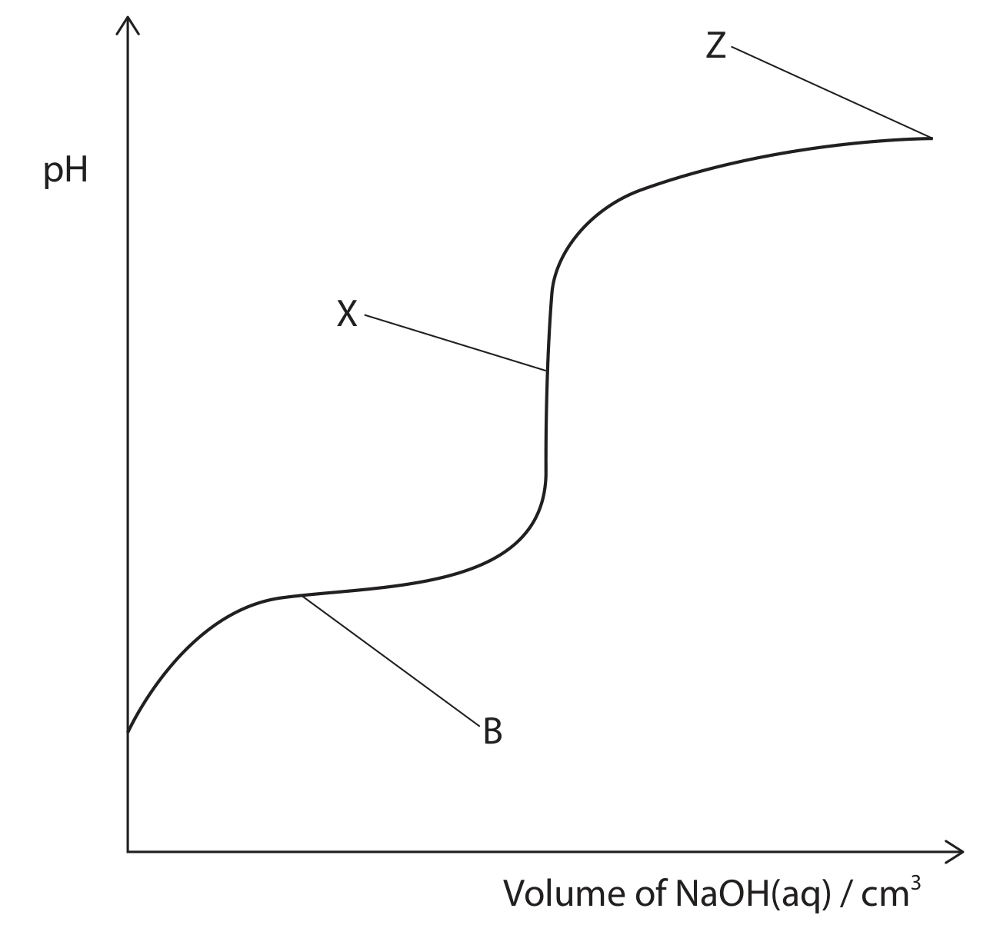
(b) 0.0020 mol dm\(^{-3}\) NaOH was added to 25.0 cm\(^3\) of 0.0015 mol dm\(^{-3}\) benzoic acid while pH was monitored.
(b)(i) Suggest a value for the pH at X and justify it. (2)Markscheme-based answer · 得分点
- \(\ce{C6H5COOH(aq)+H2O(l)<=>C6H5COO-(aq)+H3O+(aq)}\); \(K_a=[\ce{C6H5COO-}][\ce{H+}]/[\ce{C6H5COOH}]\). [2]
- \([\ce{C6H5COOH}]=3.44/122.1=0.028174\); \(K_a=10^{-4.20}=6.3096\times10^{-5}\); \([\ce{H+}]=\sqrt{K_a c}=1.333\times10^{-3}\); pH \(=2.88\). [4]
- Approximations: initial acid concentration equals equilibrium acid concentration; \([\ce{C6H5COO-}]=[\ce{H+}]\) / water ionisation is negligible. [2]
- At X pH is 7.3–9.0 because the solution contains the salt of a weak acid and a strong base; \(n(\text{acid})=25.0\times0.0015/1000=3.75\times10^{-5}\) mol and \(V(\ce{NaOH})=18.8\) cm\(^3\). [4]
- At Z, pOH \(=-\log(0.0020)=2.70\), so pH \(=14.00-2.70=11.3\). [2]
- In B pH remains almost constant when small amounts of alkali are added; benzoic acid and benzoate ions are present in high concentrations. Added acid is removed by benzoate; added alkali is removed by benzoic acid. [6]
- Buffers maintain the pH needed for enzymes / biochemical processes; extreme pH can denature enzymes. [1]
2026 May · U4AA Q15
This question is about weak Brønsted-Lowry acids such as propanoic acid, CH\(_3\)CH\(_2\)COOH.
(a)(i) State what is meant by the term “weak Brønsted-Lowry acid”. (2)(b) A 10.0 cm\(^3\) portion of 0.250 mol dm\(^{-3}\) propanoic acid is titrated with 0.100 mol dm\(^{-3}\) aqueous sodium hydroxide.
(b)(i) Calculate the pH after 12.50 cm\(^3\) alkali has been added. (2)(c) An aqueous solution of a different weak acid, RCOOH, concentration 0.250 mol dm\(^{-3}\), has pH 2.50. 10.0 cm\(^3\) is titrated with 30.0 cm\(^3\) of 0.100 mol dm\(^{-3}\) sodium hydroxide.
(c)(i) Sketch the titration curve. (3)Markscheme-based answer · 得分点
- Weak means only partially dissociated / ionised; Brønsted-Lowry acid is a proton donor. [2]
- \([\ce{H+}]=\sqrt{1.30\times10^{-5}\times0.250}=1.803\times10^{-3}\); pH \(=2.74\). [3]
- Initial acid \(=0.00250\) mol; NaOH added \(=0.00125\) mol, so acid is half-neutralised and pH \(=pK_a=4.89\). [2]
- The mixture is a buffer; \(\ce{OH-+CH3CH2COOH -> CH3CH2COO-+H2O}\); the reserve of acid and its salt means their ratio changes little. [3]
- Curve is S-shaped, starts at pH 2.50, has a vertical section at 25.0 cm\(^3\) covering pH 6–11, and finishes between pH 11.5 and 13. [3]
- Bromophenol blue is not suitable: transition range pH 2.8–4.6 is outside the vertical section / changes before the endpoint. [2]
2025 May · U4A Q17
This question is about weak acids.
| Acid | \(K_a\) / mol dm\(^{-3}\) |
|---|---|
| ethanoic acid | \(1.70\times10^{-5}\) |
| chloroethanoic acid | \(1.30\times10^{-3}\) |
(b)(ii) Complete the equilibrium and label the conjugate acid-base pairs:
\[\ce{CH3COOH + CH2ClCOOH <=> \underline{\hspace{3cm}} + \underline{\hspace{3cm}}}\]
(2)
(c) 8.20 g sodium ethanoate is mixed with 250 cm\(^3\) of 0.700 mol dm\(^{-3}\) ethanoic acid. Calculate the pH. (4)Markscheme-based answer · 得分点
- \(K_a=[\ce{CH3COO-}][\ce{H+}]/[\ce{CH3COOH}]\); \([\ce{H+}]=\sqrt{1.70\times10^{-5}\times0.25}=2.062\times10^{-3}\), pH \(=2.69\). [3]
- Assumption: degree of ionisation is negligible, so \([\ce{CH3COOH}]_{eq}\approx[\ce{CH3COOH}]_{initial}\) and \([\ce{H+}]=[\ce{CH3COO-}]\). [1]
- Cl is electron-withdrawing / negatively inductive; it stabilises the carboxylate ion and weakens O–H, so H\(^+\) is lost more easily. [1]
- \(\ce{CH3COOH+CH2ClCOOH <=> CH3COOH2+ + CH2ClCOO-}\); correct conjugate-pair labels. [2]
- \(n(\ce{CH3COONa})=8.20/82=0.100\) mol; \([\ce{CH3COO-}]=0.400\) mol dm\(^{-3}\); \([\ce{H+}]=K_a[\ce{HA}]/[\ce{A-}]=2.975\times10^{-5}\); pH \(=4.53\). [4]
- Initially pH is below 3.8, so indicator is yellow; dilution lowers \([\ce{H+}]\) and raises pH; it becomes green around pH 4.7 and blue at pH ≥5.4. [3]
2024 Oct · U4A Q17
This question is about acids containing sulfur.
(a) \(\ce{H2SO4(aq)+2NaOH(aq)->Na2SO4(aq)+2H2O(l)}\). Calculate the pH when 20.0 cm\(^3\) of 0.0720 mol dm\(^{-3}\) sulfuric acid is mixed with 80.0 cm\(^3\) of 0.240 mol dm\(^{-3}\) sodium hydroxide. Give the answer to 1 dp. \(K_w=1.00\times10^{-14}\ \mathrm{mol^2\ dm^{-6}}\). (6)(b) Sulfurous acid dissociates:
\[\ce{H2SO3(aq) <=> HSO3-(aq)+H+(aq)}\]
It forms a buffer with sodium hydrogensulfite, NaHSO\(_3\).
(b)(i) State what is meant by weak in this context. (1)Markscheme-based answer · 得分点
- \(n(\ce{OH-})=0.0800\times0.240=0.0192\) mol; \(n(\ce{H+})=0.0200\times0.0720\times2=0.00288\) mol; excess \(\ce{OH-}=0.01632\) mol in 0.100 dm\(^3\), concentration \(=0.1632\) mol dm\(^{-3}\). \([\ce{H+}]=10^{-14}/0.1632\), pH \(=13.2\). [6]
- Weak means a significant proportion of the acid remains undissociated / dissociation is incomplete. [1]
- A buffer resists pH change when small amounts of acid or alkali are added. [2]
- \([\ce{H+}]=10^{-2.18}=6.6069\times10^{-3}\); from \(K_a=[\ce{H+}][\ce{HSO3-}]/[\ce{H2SO3}]\), \([\ce{NaHSO3}]=0.11188\) mol dm\(^{-3}\); moles \(=5.594\times10^{-3}\); mass \(=0.582\) g. [5]
2024 May · U4A Q19
This question is about acids and bases.
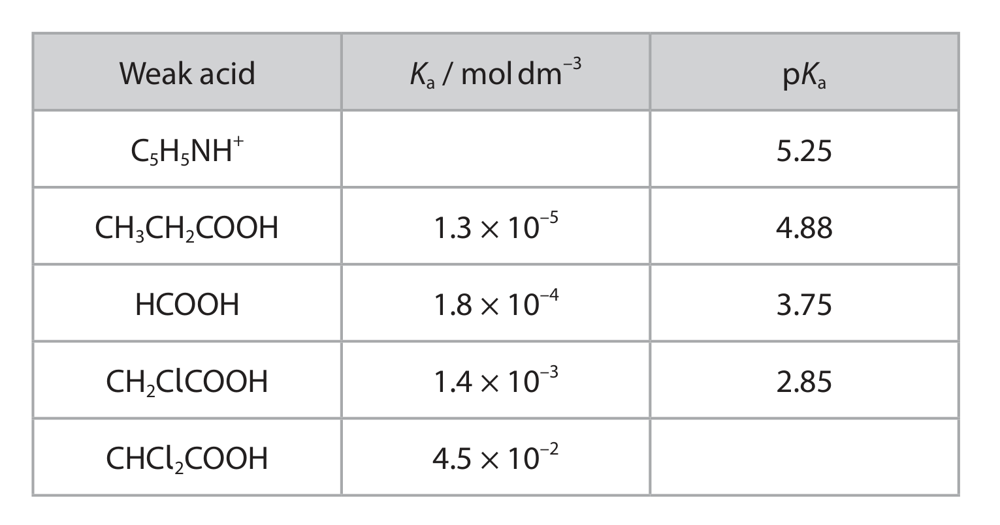
The table gives:
| Weak acid | \(K_a\) / mol dm\(^{-3}\) | p\(K_a\) |
|---|---|---|
| C\(_5\)H\(_5\)NH\(^+\) | 5.25 | |
| CH\(_3\)CH\(_2\)COOH | \(1.3\times10^{-5}\) | 4.88 |
| HCOOH | \(1.8\times10^{-4}\) | 3.75 |
| CH\(_2\)ClCOOH | \(1.4\times10^{-3}\) | 2.85 |
| CHCl\(_2\)COOH | \(4.5\times10^{-2}\) |
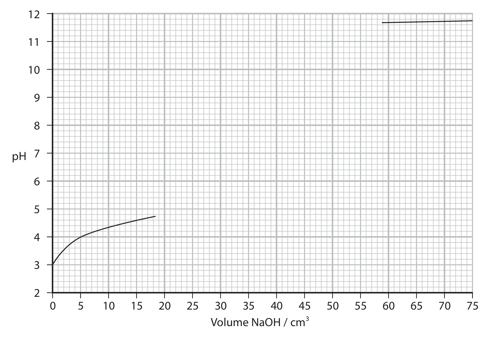
Markscheme-based answer · 得分点
- C\(_5\)H\(_5\)NH\(^+\): \(K_a=5.6\times10^{-6}\); CHCl\(_2\)COOH: p\(K_a=1.35\). \(K_a=[\ce{H+}][\ce{C5H5N}]/[\ce{C5H5NH+}]\). [3]
- Equilibrium: \(\ce{CH3CH2COOH+HCOOH <=> CH3CH2COOH2+ + HCOO-}\) with correct conjugate-pair labels. [2]
- Use \([\ce{H+}]=\sqrt{K_a[\ce{HA}]}\) and pH \(=-\log[\ce{H+}]\); calculated pH values are 2.08 and 1.32. Dissociation makes \([\ce{HA}]_{eq}<[\ce{HA}]_{initial}\), so the approximation overestimates acid and gives calculated pH lower than measured; difference is larger for the stronger dichloro acid. [6]
- Titration curve: first vertical section at 25 cm\(^3\), second at 50 cm\(^3\), and pH near 9.3 at 37.5 cm\(^3\). [3]
- \([\ce{OH-}]_{12.43}=10^{-1.57}=0.026915\); total volume at 0.0100 mol dm\(^{-3}\) is \(134.6\) cm\(^3\); water added \(=134.6-50.0=84.6\) cm\(^3\). [5]
2021 Oct · U4A Q20
Sodium hydrogensulfate is a widely used acid. It is a weak acid because of the hydrogensulfate ion, HSO\(_4^-\).
(a)(i) Write the equation for dissociation of HSO\(_4^-\) in aqueous solution. (1)(b) A solution containing sodium hydrogensulfate and sodium sulfate is a buffer used to preserve urine.
(b)(i) State what is meant by buffer. (2)Markscheme-based answer · 得分点
- \(\ce{HSO4- <=> H+ + SO4^{2-}}\). [1]
- \(K_a=10^{-1.92}=0.012023\), \([\ce{H+}]=10^{-1.13}=0.074131\); \([\ce{HSO4-}]=[\ce{H+}]^2/K_a=0.4571\) mol dm\(^{-3}\); \(M_r(\ce{NaHSO4})=120.1\); concentration \(=54.9\) g dm\(^{-3}\). [5]
- HSO\(_4^-\) dissociation is negligible and H\(^+\) comes only from HSO\(_4^-\) / water ionisation is negligible. [2]
- A buffer resists pH change on addition of small amounts of acid or alkali. [2]
- Henderson–Hasselbalch: pH \(=1.92+\log(0.500/0.750)=1.74\). [3]
- Distilled water: pH changes from 7.00 to 2.30, \(\Delta\)pH \(=4.70\). Buffer after HCl: concentrations 0.755 and 0.495 mol dm\(^{-3}\), pH \(=1.737\), change about 0.007. [4]
- Methyl orange changes red → orange → yellow over a broad range and its endpoint occurs well below the equivalence point, so it is unsuitable for this weak-acid titration. [3]
2024 Jan · U4A Q19
Ethyl propanoate may be hydrolysed using hydrochloric acid as a catalyst.
\[\ce{CH3CH2COOCH2CH3(l)+H2O(l)<=>CH3CH2COOH(l)+CH3CH2OH(l)}\]
A mixture was prepared from 0.100 mol ethyl propanoate and 0.200 mol water. At equilibrium it contained 0.0440 mol propanoic acid.
(a)(i) Calculate \(K_c\). (4)Markscheme-based answer · 得分点
- Equilibrium amounts are 0.0560 ester, 0.156 water, 0.0440 acid and 0.0440 ethanol; \(K_c=(0.0440)^2/(0.0560\times0.156)=0.222\). [4]
- Similar numbers/types of bonds are broken and made, but the bonds are in different molecules/environments. [2]
- \(\Delta S_{surroundings}=-\Delta H/T\) is small; hence \(\Delta S_{total}\) changes little and \(\Delta S_{total}=R\ln K\), so \(K_c\) changes little. [3]
- Propanoic acid is partially dissociated; HCl is almost completely dissociated. pH of HCl \(=-\log(0.500)=0.301\). [2]
- \([\ce{H+}]=\sqrt{1.3\times10^{-5}\times0.500}=2.55\times10^{-3}\); pH \(=2.59\). [3]
- At half-neutralisation, \([\ce{acid}]=[\ce{conjugate\ base}]\) and pH=p\(K_a\). [2]
2021 May · U4A Q19
The compound lactic acid can be synthesised from ethanal in two steps.
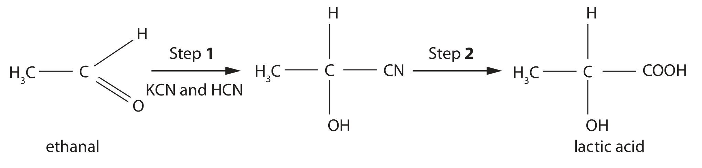
(a)(iii) Complete the table that summarises information about Step 2. State symbols are not required for the equation. (4)
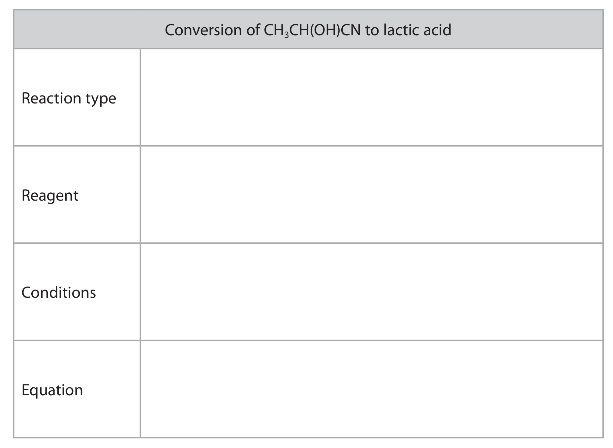
(c) Sodium hydrogencarbonate is part of a buffer in the body that controls the pH of blood. The equilibria are \(\ce{HCO3- + H3O+ <=> H2CO3 + H2O}\) and \(\ce{H2CO3 <=> CO2 + H2O}\).
(c)(i) Use the equilibria to explain how the buffer keeps the pH of blood nearly constant when the concentration of hydrogen ions increases. (3)Markscheme-based answer · 得分点
- Step 1: \(\ce{CN-}\) attacks the planar carbonyl carbon, the C=O \(\pi\) electrons move to oxygen, and proton transfer gives the cyanohydrin. [4]
- Step 1 gives a racemic mixture because attack occurs from either face; equal opposite rotations cancel, so the prediction is incorrect. [3]
- Step 2: acid hydrolysis of the nitrile using aqueous acid and heating; correct equation to lactic acid. [4]
- \(\ce{CH3CH(OH)COOH + NaHCO3 -> CH3CH(OH)COONa + CO2 + H2O}\). [1]
- Increased \(\ce{H+}\) is removed by \(\ce{HCO3-}\) to form \(\ce{H2CO3}\), which forms \(\ce{CO2}\) and water; the increase in \(\ce{H+}\) is therefore limited. [3]
- Henderson-Hasselbalch: \(\mathrm{pH}=pK_a+\log([\ce{HCO3-}]/[\ce{H2CO3}])\), giving a ratio of approximately 15.8:1. [3]
2022 May · U4A Q19
This question is about methanoic acid and propanoic acid.
(a)(i) Complete the equation for the reaction taking place in the titration of methanoic acid with potassium hydroxide. (1)Markscheme-based answer · 得分点
- \(\ce{HCOOH + KOH -> HCOOK + H2O}\) / equivalent ionic equation. [1]
- Use the equivalence volume and the 1:1 equation to calculate the KOH concentration. [2]
- At half-equivalence, pH = \(pK_a\); read the pH from the curve and calculate \(K_a=10^{-pK_a}\). [3]
- From \(\mathrm{pH}=pK_a+\log([\ce{CH3CH2COO-}]/[\ce{CH3CH2COOH}])\), the required acid:propanoate ratio is approximately 1.9:1. [2]
2023 Jan · U4A Q21
Gluconic acid is a weak acid which occurs in fruit and honey and is widely used as a food additive.
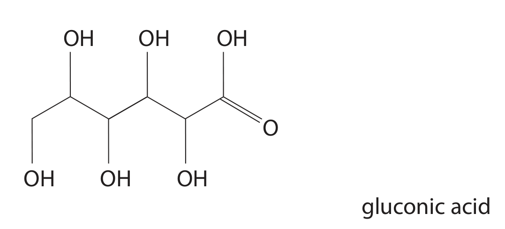
(b) 0.105 mol dm\(^{-3}\) sodium hydroxide was titrated against 25.0 cm\(^3\) of the gluconic acid solution. The titration curve is shown.
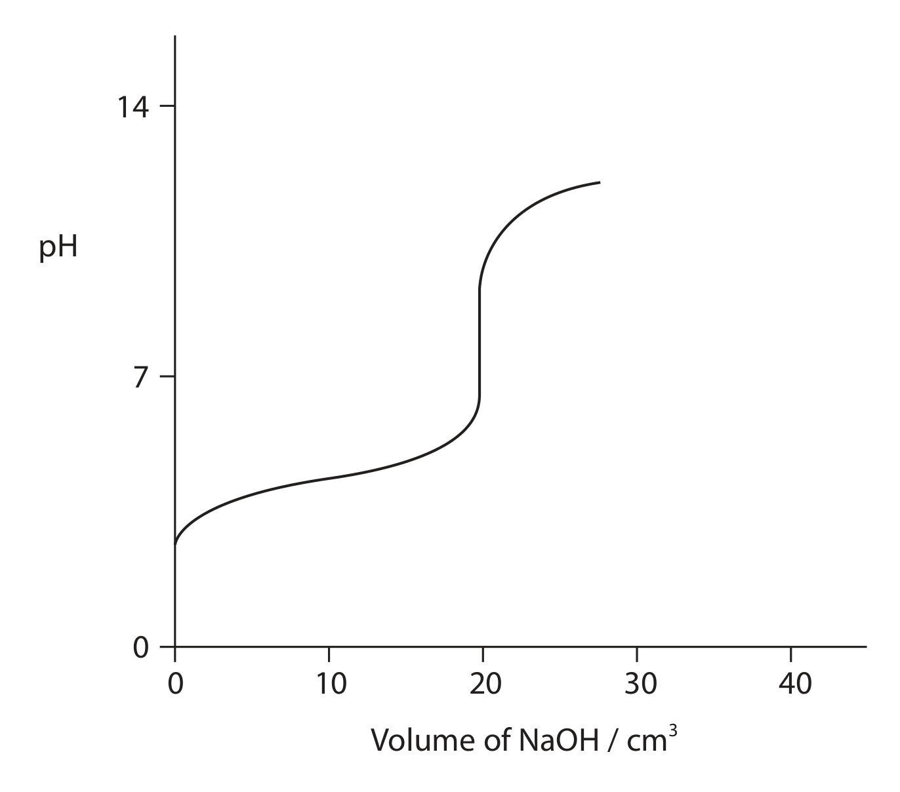
Markscheme-based answer · 得分点
- \(\ce{RCOOH + H2O <=> RCOO- + H3O+}\) and \(K_a=[\ce{RCOO-}][\ce{H+}]/[\ce{RCOOH}]\). [1]
- \(c=4.75/196 \div 0.250=0.0969\) mol dm\(^{-3}\); \([\ce{H+}]=\sqrt{K_a c}=3.66\times10^{-3}\); pH \(=2.44\). [4]
- The equivalence point is in the indicator transition range of phenol red, so its colour change occurs in the steep section. [2]
- Use moles of acid and excess \(\ce{OH-}\) after 35.0 cm\(^3\) NaOH, then calculate the remaining hydroxide concentration and pH. [5]
- Added \(\ce{H+}\) reacts with \(\ce{RCOO-}\) and added \(\ce{OH-}\) reacts with \(\ce{RCOOH}\); both species are present in significant amounts. [4]
- \(\mathrm{pH}=pK_a+\log([\ce{RCOO-}]/[\ce{RCOOH}])\); calculate the required sodium gluconate amount. [3]
2023 May · U4A Q22
The alkaline compound tris(hydroxymethyl)aminomethane, known as Tris, is used to make a buffer for biological research.
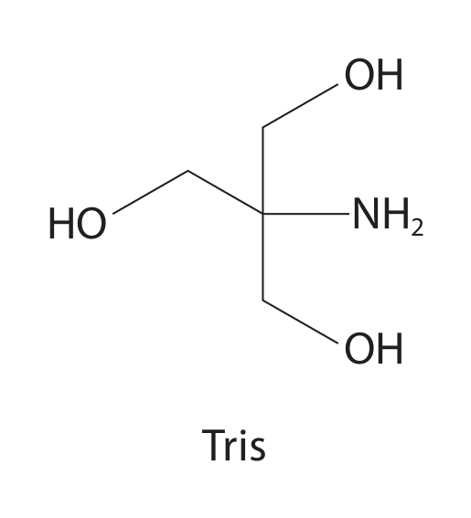
(d) A titration curve of Tris with chloroethanoic acid is shown.
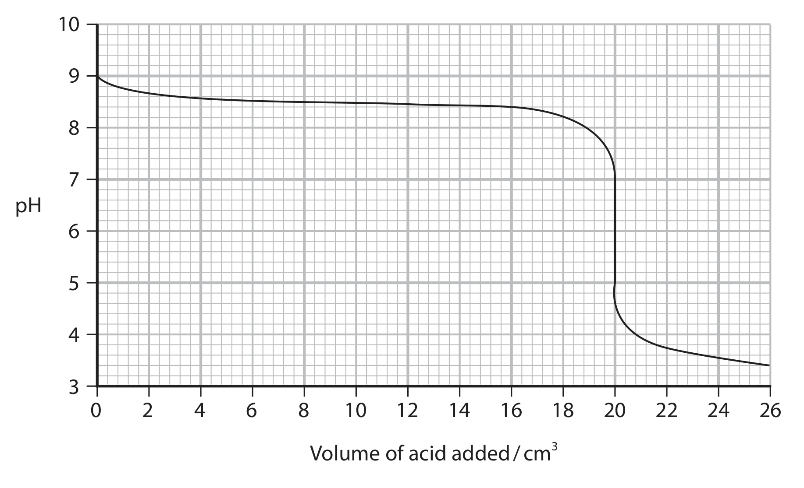
Markscheme-based answer · 得分点
- Tris gives the expected number of proton NMR environments and signals. [3]
- Added acid is taken up by Tris to form the conjugate acid, so pH changes only slightly. [3]
- \(K_a=[\ce{Tris}][\ce{H+}]/[\ce{TrisH+}]\). [1]
- Use the moles of Tris and conjugate acid with Henderson-Hasselbalch to obtain the pH. [5]
- Use \([\ce{H+}]\approx\sqrt{K_a c}\) with the acid concentration from the mass and volume to calculate \(K_a\). [4]
- The flatter region of the curve shows resistance to pH change. [2]
- Read the pH at the neutralisation point from the graph; stable pH is essential for enzymes and biochemical reactions. [2]
2025 October · U4A Q10
Brønsted and Lowry defined acids and bases in terms of the transfer of a proton between two species.
(a)(i) Write the equation which shows how a compound HA can act as a Brønsted-Lowry acid when dissolved in water. State symbols are not required. (1)Markscheme-based answer · 得分点
- \(\ce{HA + H2O <=> H3O+ + A-}\). [1]
- \(\mathrm{pH}=-\log[\ce{H+}]\). [1]
- \(K_a=[\ce{CH3COO-}][\ce{H+}]/[\ce{CH3COOH}]\). [1]
- \([\ce{H+}]=10^{-\mathrm{pH}}\) or the weak-acid approximation \([\ce{H+}]=\sqrt{K_a c}\). [1]
- \([\ce{H+}]=\sqrt{1.75\times10^{-5}\times0.25}=2.09\times10^{-3}\); pH \(=2.68\). [2]
- HCl is fully dissociated, so reducing concentration reduces \([\ce{H+}]\) proportionally and raises pH by 1. Ethanoic acid is only partially dissociated; dilution increases its degree of dissociation, so its pH changes by less than 1. [4]
2026 January · U4A Q16
Buffers are very important in biological systems.
(a) Describe how a carbonic acid-hydrogencarbonate buffer system maintains the pH of blood as the concentration of dissolved carbon dioxide changes. Include relevant equations in your answer. (5)(b) Within body cells the pH is maintained by a different buffer system: \(\ce{H2PO4- <=> H+ + HPO4^{2-}}\), \(K_a=6.21\times10^{-8}\ \mathrm{mol\ dm^{-3}}\).
29.48 g NaH\(_2\)PO\(_4\) is dissolved in 3.18 dm\(^3\) of 0.0800 mol dm\(^{-3}\) Na\(_2\)HPO\(_4\) solution and made up to 5.00 dm\(^3\). Calculate the pH. \(M_r(\ce{NaH2PO4})=120.0\). (5)Markscheme-based answer · 得分点
- Increased dissolved \(\ce{CO2}\) forms carbonic acid, increasing \(\ce{H+}\); \(\ce{HCO3-}\) removes \(\ce{H+}\) to form \(\ce{H2CO3}\), and \(\ce{H2CO3}\) equilibrates with \(\ce{CO2}\) and water. The reverse process occurs when dissolved \(\ce{CO2}\) decreases. [5]
- \(n(\ce{H2PO4-})=29.48/120.0=0.2457\) mol; \(n(\ce{HPO4^{2-}})=3.18\times0.0800=0.2544\) mol. Use \(\mathrm{pH}=pK_a+\log([\ce{HPO4^{2-}}]/[\ce{H2PO4-}])\) to obtain the pH. [5]
Unit 4 multiple-choice bank · Topic 14 · 2021–2026
以下 MCQ 保留完整题干、A–D 选项、答案和 explanation；答案使用与 structured questions 相同的隐藏方式。
2025 May Q4 What is the pH of a 1.25 mol dm\(^{-3}\) solution of hydrochloric acid?
A −1.25
B −0.097
C 0.097
D 1.25
Show answer · 答案
Answer: B. \(\mathrm{pH}=-\log(1.25)=-0.097\).
2025 May Q5 At 25 °C, the pH of pure water is 7.0 and at 75 °C the pH is 6.4. Why is the pH of pure water lower at 75 °C than at 25 °C?
A there are more hydrogen ions than hydroxide ions when the water is at 75 °C
B the dissociation of water is endothermic so the concentration of hydrogen ions is lower at 75 °C
C the dissociation of water is endothermic so the concentration of hydrogen ions is higher at 75 °C
D the dissociation of water is exothermic so the concentration of hydrogen ions is higher at 75 °C
Show answer · 答案
Answer: C. Pure water still has \([\ce{H+}]=[\ce{OH-}]\), but \(K_w\) and both concentrations increase.
2025 May Q6 A sodium hydroxide solution with pH = 12 is diluted by a factor of 100. What is the pH of the diluted solution?
A 10
B 11
C 13
D 14
Show answer · 答案
Answer: A. \([\ce{OH-}]\) falls from \(10^{-2}\) to \(10^{-4}\ \mathrm{mol\ dm^{-3}}\), so pOH \(=4\) and pH \(=10\).
2025 October AA Q5 When ethanoic acid and chloroethanoic acid are mixed, an equilibrium is set up. The Brønsted-Lowry acids in this equilibrium are
A CH\(_3\)COOH and CH\(_2\)ClCOOH
B CH\(_3\)COOH and CH\(_3\)COOH\(_2^+\)
C CH\(_2\)ClCOOH and CH\(_3\)COOH\(_2^+\)
D CH\(_3\)COOH\(_2^+\) and CH\(_2\)ClCOO\(^-\)
Show answer · 答案
Answer: A. Both CH\(_3\)COOH and CH\(_2\)ClCOOH are proton donors; the equilibrium products are the conjugate acid and conjugate base.
2025 October AA Q7 What is the pH of a solution containing 0.100 mol dm\(^{-3}\) CH\(_3\)COOH? \(pK_a=4.76\).
A 5.06
B 4.76
C 4.46
D 2.88
Show answer · 答案
Answer: D. \([\ce{H+}]=\sqrt{10^{-4.76}\times0.100}\), giving pH ≈ 2.88.
2025 October AA Q8 Which indicator is most suitable for the titration of ammonia solution with hydrochloric acid?
A methyl violet (\(pK_{In}=0.8\))
B bromocresol green (\(pK_{In}=4.7\))
C thymol blue (\(pK_{In}=8.9\))
D alizarin yellow (\(pK_{In}=12.5\))
Show answer · 答案
Answer: B. The equivalence point is acidic, so the indicator range must be below pH 7.
2024 October Q6 Which indicator can be used to show the end-point of a titration between hydrochloric acid, HCl(aq), and ammonia solution, NH\(_3\)(aq)?
A universal indicator
B phenolphthalein
C phenol red
D methyl orange
Show answer · 答案
Answer: D. The equivalence point is acidic, so methyl orange changes in the steep section.
2022 January Q5 An example of a diprotic acid is cis-butenedioic acid. Titration of this acid using sodium hydroxide solution gave the titration curve shown. Which indicator would be most suitable for measuring the end-point of the neutralisation of the proton in cis-butenedioic acid which has a p\(K_a=6.33\)? Use your Data Booklet.
A methyl orange
B methyl red
C phenolphthalein
D universal indicator
Show answer · 答案
Answer: D. Phenolphthalein changes in the steep alkaline section shown by the curve.
2021 January Q9 This question is about weak acids. p\(K_a\) of ethanoic acid, CH\(_3\)COOH = 4.8; p\(K_a\) of chloroethanoic acid, CH\(_2\)ClCOOH = 2.9. (a) What is the pH of a 0.100 mol dm\(^{-3}\) solution of chloroethanoic acid?
A 0.27
B 1.95
C 2.90
D 3.90
Show answer · 答案
Answer: B. \(K_a=10^{-2.9}\) and \([\ce{H+}]\approx\sqrt{K_a c}\), giving pH \(=1.95\).
2021 January Q11 A diprotic acid, H\(_2\)A, was titrated with sodium hydroxide solution.
\[\ce{H2A(aq)+2NaOH(aq)->Na2A(aq)+2H2O(l)}\]
A 2.56 × 10\(^{-2}\)
B 9.77 × 10\(^{-2}\)
C 1.95 × 10\(^{-1}\)
D 3.91 × 10\(^{-1}\)
Show answer · 答案 + explanation
Answer: B. \(n(\ce{NaOH})=0.00250\) mol, so \(n(\ce{H2A})=0.00125\) mol; divide by 0.01280 dm\(^3\).
2021 January Q10(a) A titration was carried out by adding 0.1 mol dm\(^{-3}\) hydrochloric acid to 0.1 mol dm\(^{-3}\) aqueous ammonia. Which region represents the most effective buffer solution?
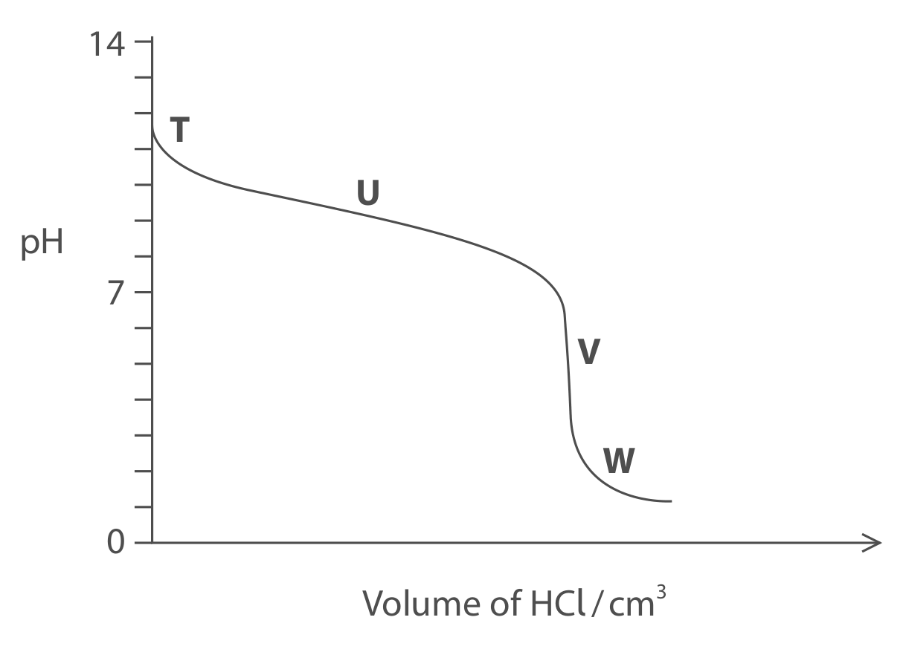
A region T
B region U
C region V
D region W
Show answer · 答案 + explanation
Answer: B. The most effective buffer region is centred on the half-equivalence point, where comparable concentrations of \(\ce{NH3}\) and \(\ce{NH4+}\) are present.
2021 January Q10(b) Which is the best indicator to use in this titration?
A methyl red
B phenol red
C phenolphthalein
D thymol blue
Show answer · 答案 + explanation
Answer: A. The equivalence point for a weak base–strong acid titration is acidic; methyl red changes within the steep region.
2021 October Q8 When ethanoic acid and chloroethanoic acid are mixed, an equilibrium is set up. The Brønsted-Lowry acids are
A \(\ce{CH3COOH}\) and \(\ce{CH2ClCOOH}\)
B \(\ce{CH3COOH}\) and \(\ce{CH3COOH2+}\)
C \(\ce{CH2ClCOOH}\) and \(\ce{CH3COOH2+}\)
D \(\ce{CH3COOH2+}\) and \(\ce{CH2ClCOO-}\)
Show answer · 答案 + explanation
Answer: A. Both carboxylic acids are proton donors.
2021 October Q9 What is the pH of 0.010 mol dm\(^{-3}\) aqueous calcium hydroxide, \(\ce{Ca(OH)2(aq)}\)?
A 2.0
B 5.8
C 9.7
D 11.3
Show answer · 答案 + explanation
Answer: D. Calcium hydroxide supplies two hydroxide ions per formula unit; use \([\ce{OH-}]\), pOH and pH.
2022 January Q6 At 25 °C, pure water has pH 7.00 and at 100 °C pH 6.14. What can be deduced?
A dissociation of water is endothermic and \([\ce{H+}]\) is higher at 100 °C
B dissociation of water is endothermic and \([\ce{H+}]\) is lower at 100 °C
C dissociation of water is exothermic and \([\ce{H+}]\) is higher at 100 °C
D dissociation of water is exothermic and \([\ce{H+}]\) is lower at 100 °C
Show answer · 答案 + explanation
Answer: A. Neutral water has equal \([\ce{H+}]\) and \([\ce{OH-}]\); endothermic dissociation gives higher concentrations at higher temperature.
2022 May Q7 What is the pH of a 0.010 mol dm\(^{-3}\) aqueous solution of carbonic acid?
A 2.0
B 3.0
C 4.0
D 5.0
Show answer · 答案 + explanation
Answer: B. Use the first dissociation equilibrium and the supplied \(K_a\) value.
2022 May Q8 What is the pH of a 0.27 mol dm\(^{-3}\) aqueous solution of sodium hydroxide?
A 0.57
B 1.43
C 12.43
D 13.43
Show answer · 答案 + explanation
Answer: D. pOH \(=-\log(0.27)=0.57\), so pH \(=13.43\).
2022 October Q7 In which equation is \(\ce{H2O}\) acting only as a Brønsted-Lowry acid?
A \(\ce{H2O + HCl -> H3O+ + Cl-}\)
B \(\ce{H2O + NH3 <=> NH4+ + OH-}\)
C \(\ce{H2O + HSO4- <=> H3O+ + SO4^{2-}}\)
D \(\ce{H2O + CO2 <=> H2CO3}\)
Show answer · 答案 + explanation
Answer: C. Water donates a proton to \(\ce{HSO4-}\).
2022 October Q8 What is the pH of a 0.050 mol dm\(^{-3}\) solution of barium hydroxide, \(\ce{Ba(OH)2}\)?
A 1.30
B 2.65
C 12.70
D 13.70
Show answer · 答案 + explanation
Answer: D. Two hydroxide ions are produced per formula unit; calculate pOH then pH.
2022 October Q9 What is the pH of a solution containing 0.100 mol dm\(^{-3}\) ethanoic acid and 0.100 mol dm\(^{-3}\) sodium ethanoate? \(pK_a=4.76\).
A 2.38
B 4.76
C 5.06
D 9.52
Show answer · 答案 + explanation
Answer: B. Equal acid and conjugate-base concentrations give pH \(=pK_a\).
2022 October Q10 Which indicator is most suitable for the titration of ammonia solution with hydrochloric acid?
A methyl violet
B bromocresol green
C phenolphthalein
D alizarin yellow
Show answer · 答案 + explanation
Answer: B. The equivalence point is acidic.
2023 January Q11 A 1 mol dm\(^{-3}\) solution of ethanoic acid is gradually diluted with distilled water. What happens to the degree of dissociation and pH?
A increases, increases
B increases, decreases
C decreases, increases
D decreases, decreases
Show answer · 答案 + explanation
Answer: A. Dilution increases weak-acid dissociation and decreases \([\ce{H+}]\).
2023 May Q15 Which is not a conjugate acid-base pair?
A \(\ce{HCOOH/HCOO-}\)
B \(\ce{CH3COOH/CH3COO-}\)
C \(\ce{HCOOH/CH3COOH2+}\)
D \(\ce{CH3COOH/CH3COOH2+}\)
Show answer · 答案 + explanation
Answer: C. A conjugate pair differs by one proton.
2023 May Q16 What is the pH when 2.15 g of barium hydroxide is dissolved in water?
A 1.16
B 2.84
C 11.16
D 12.84
Show answer · 答案 + explanation
Answer: D. Calculate moles of \(\ce{Ba(OH)2}\), account for two hydroxide ions, then calculate pOH and pH.
2024 May Q6 A buffer contains \(\ce{CH3COOH}\) and \(\ce{CH3COONa}\) in the ratio 1:4. What is the pH if \(pK_a=4.76\)?
A 4.16
B 4.76
C 5.36
D 9.52
Show answer · 答案 + explanation
Answer: C. \(\mathrm{pH}=pK_a+\log(4)=5.36\).
2024 October Q7 Phenolphthalein is a very weak acid and forms a colourless solution under acidic conditions. Which statement about its conjugate base is correct?
A colourless and stronger acid
B coloured and stronger acid
C colourless and weaker acid
D coloured and weaker acid
Show answer · 答案 + explanation
Answer: D. The conjugate base is the coloured, weaker-acid form.
2024 October Q8 The dissociation of water is endothermic. Which statement explains the pH of pure water at higher temperature?
A \(K_w\) decreases and \([\ce{H+}]\) decreases
B \(K_w\) increases and \([\ce{H+}]\) increases
C \(K_w\) increases and \([\ce{H+}]\) decreases
D \(K_w\) decreases and \([\ce{H+}]\) increases
Show answer · 答案 + explanation
Answer: B. Endothermic dissociation is favoured at higher temperature.
2025 January Q4 A strong monoprotic acid of concentration 0.0100 mol dm\(^{-3}\) has pH 2.0. What is the decrease in pH if the concentration is increased to 0.0110 mol dm\(^{-3}\)?
A 0.001
B 0.04
C 1.04
D 1.96
Show answer · 答案 + explanation
Answer: B. \(\Delta\mathrm{pH}=-\log(0.0110/0.0100)\approx-0.04\).
2026 January U4A Q9 Which concentration of aqueous calcium hydroxide has a pH of 12.32?
A 0.0010 mol dm\(^{-3}\)
B 0.010 mol dm\(^{-3}\)
C 0.050 mol dm\(^{-3}\)
D 0.100 mol dm\(^{-3}\)
Show answer · 答案 + explanation
Answer: B. pOH \(=1.68\), so \([\ce{OH-}]=0.0209\) mol dm\(^{-3}\) and the calcium hydroxide concentration is approximately half this value.
2026 January U4AA Q8 At 25 °C pure water has pH 7.0 but at 90 °C it has pH 6.1. Which pair explains this?
A endothermic dissociation; higher hydrogen-ion concentration
B endothermic dissociation; lower hydrogen-ion concentration
C exothermic dissociation; higher hydrogen-ion concentration
D exothermic dissociation; lower hydrogen-ion concentration
Show answer · 答案 + explanation
Answer: A. Neutrality still means equal ion concentrations; the lower neutral pH reflects a higher \([\ce{H+}]\).
2026 May Q1 What is the conjugate base of \(\ce{HPO4^{2-}}\)?
A \(\ce{H3PO4}\)
B \(\ce{H2PO4-}\)
C \(\ce{PO4^{3-}}\)
D \(\ce{PO3-}\)
Show answer · 答案 + explanation
Answer: C. The conjugate base is formed by loss of one proton.
2026 May Q2 What is the pH when 50 cm\(^3\) of 0.010 mol dm\(^{-3}\) HCl(aq) is mixed with 50 cm\(^3\) of 0.010 mol dm\(^{-3}\) HNO\(_3\)(aq)?
A 1.0
B 1.7
C 2.0
D 2.3
Show answer · 答案 + explanation
Answer: C. The total hydrogen-ion amount is 0.00100 mol in 0.100 dm\(^3\), giving pH 2.0.
2026 May Q3 What is the concentration of hydrogen ions in a 0.15 mol dm\(^{-3}\) aqueous solution of ethanoic acid? \(K_a=1.8\times10^{-5}\ \mathrm{mol\ dm^{-3}}\).
A \(2.7\times10^{-6}\)
B \(1.6\times10^{-3}\)
C 0.15
D 2.8
Show answer · 答案 + explanation
Answer: B. \([\ce{H+}]=\sqrt{K_a c}=1.6\times10^{-3}\) mol dm\(^{-3}\).
2026 May Q4(a) A titration curve for 0.100 mol dm\(^{-3}\) methanoic acid with 0.040 mol dm\(^{-3}\) KOH is shown. Which indicator should be used to determine the end-point?
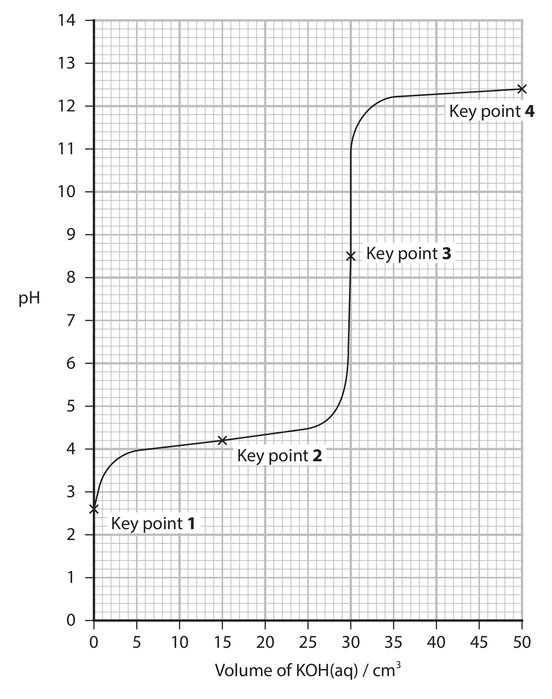
A bromophenol blue
B bromocresol green
C methyl orange
D phenol red
Show answer · 答案 + explanation
Answer: D. The weak-acid/strong-base equivalence point is alkaline.
2026 May Q4(b) What volume, in cm\(^3\), of methanoic acid was used?
A 12.0
B 15.0
C 30.0
D 75.0
Show answer · 答案 + explanation
Answer: A. At equivalence, \(0.0400\times30.0=0.100\times V\), so \(V=12.0\) cm\(^3\).
2026 May Q4(c) At which key point is the pH equal to the \(pK_a\) of methanoic acid?
A Key point 1
B Key point 2
C Key point 3
D Key point 4
Show answer · 答案 + explanation
Answer: B. pH equals \(pK_a\) at the half-equivalence point.
2026 May Q4(d) Which expression about \([\ce{OH-}]\) at Key point 4 is correct?
A \([\ce{OH-}]=0.040\)
B \([\ce{OH-}]>0.040\)
C \([\ce{OH-}]<0.040\)
D \([\ce{OH-}]=10^{-12.4}\)
Show answer · 答案 + explanation
Answer: C. The hydroxide is diluted by the total solution volume.
Exam checklist
Source note
本页章节素材来自项目内的 `Note per Chapter/Note per Chapter/4.5 Acid-base Equilibria.pdf.pdf`；考纲校对来自 `International-A-Level-Chemistry-Spec.pdf` 的 Topic 14: Acid-base Equilibria。图像已从 PDF 内嵌对象独立提取并存放在 `assets/notes/acidbase/`。